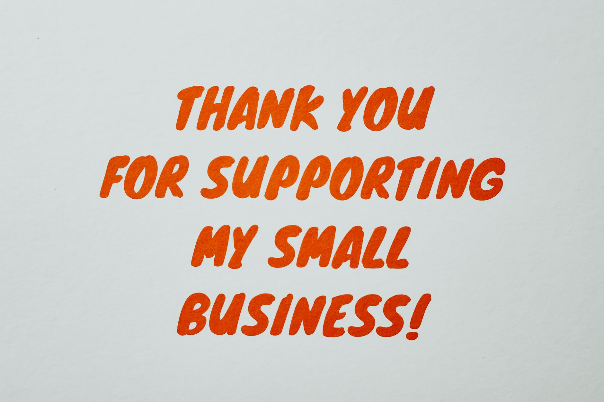

Are you tired of pouring money into marketing campaigns that feel like shouting into the void? You’ve invested in a website, hoping it’ll magically attract customers, but you’re not seeing the results you expected. You’re getting lost in a sea of generic emails and digital ads, while local customers are searching for exactly what you offer, and you’re not showing up. It’s a frustrating cycle, and frankly, it’s a problem we see over and over with small local businesses. At Fused Distribution, we specialize in building websites and driving SEO for businesses like yours, and we’ve discovered a surprisingly effective, low-cost strategy that can dramatically improve your visibility: thank you cards. This isn’t about fluffy sentimentality; it’s about a targeted, tangible approach that converts satisfied customers into active advocates. Let’s dive into how a simple thank you card can become a powerful marketing asset for your local business.

Why Thank You Cards Beat Generic Follow-ups The Local Edge
You likely send out a barrage of follow-up emails after a service. Most of them land in the “delete” folder, ignored amidst the constant stream of promotional messages. People are overwhelmed by sales pitches, and they’ve learned to tune them out. A thank you card, however, cuts through the noise. It’s a real, physical object - a tangible reminder that you actually noticed and appreciated their business. Studies show that 68% of consumers are more likely to remember a business that sends a handwritten thank you note. This difference in perception is key. It’s not just a digital message; it’s a genuine connection. When you send a card, you have a direct opportunity to ask for a review. Don’t simply state, “Leave us a review.” Instead, provide clear, actionable instructions. Include a direct link to your Google review page - make it as easy as possible for them to do it. Surveys have found that customers who received a personalized thank you note were 35% more likely to leave a review than those who didn’t. This isn’t about nagging; it’s about guiding them to a simple, beneficial action. The card needs more than just a request. Personalize the message. Reference something specific from your conversation or the job you completed. Did you discuss their plumbing issue last week? Mention it. Show them you listened. Instead of a generic “Thank you for your business,” try something like, “We’re so glad we could fix that leaky faucet and prevent further water damage. If you’re happy with the work, leaving a quick review on Google helps other local folks find us.” This demonstrates genuine care and builds trust. Then, give them a clear next step. Don’t just ask for a review; tell them what to do next. Perhaps it’s a link to book a consultation for future maintenance, or a guide on how to winterize their plumbing system. We’ve seen businesses increase their Google review rate by 20% simply by implementing this strategy.
How to Write a Thank You Note That Actually Gets a Review
Stop sending out generic thank you emails. Your thank you note needs to do more than just say thanks. It needs to actively encourage a review. Let’s craft a script that converts a simple expression of gratitude into a valuable marketing asset. First, start with a genuine expression of appreciation. Something like, “Thank you so much for choosing {Your Business Name} for your {Service}.” Then, immediately connect it to the benefit they received. “We’re thrilled we could help you [Solve their problem/Achieve their goal].” Next, directly ask for a review. Be specific. Don’t just say, “Leave us a review.” Instead, say, “We’d really appreciate it if you could take a moment to share your experience on Google. It helps other local folks find us and learn about the quality of our service.” Include the direct link to your Google review page. Make it prominent and easy to copy/paste. Personalize the message. This is crucial. Mention something specific from your interaction. Did you discuss their concerns about energy efficiency? Refer to that conversation. “We talked about your interest in reducing your energy bills, and we’re confident our {Service} will make a difference.” This shows you were paying attention and that you care about their individual needs. End with a clear next step. Don’t leave them hanging. Offer a helpful resource or a call to action. “You can find more information about [Related Service/Topic] here: {Link to your website}.” Or, “If you have any questions or would like to schedule a follow-up, please don’t hesitate to contact us.” Here’s an example: “Thank you for choosing Fused Distribution for your plumbing repair. We’re so glad we could quickly diagnose and fix that leaky pipe, preventing potential water damage. If you’re happy with our service, please share your experience on Google here: {Google Review Link}. We’re committed to providing reliable service to our neighbors, and your feedback helps us do just that. You can also explore our guide to winterizing your plumbing system here: {Link to Guide}.”

The Simple System Turning a Card into a Google Review Request
The card you give after a service isn’t just a nice thing to say thanks. It’s a tool - a carefully designed mechanism for turning a one-time customer into a Google review. You need to make the next step incredibly easy for them. Don’t just slap a generic link on it. Mention something specific about their visit. Say, “Thanks for letting me help you fix that leaky faucet. If you have a minute, leave a quick review on Google. It helps other local folks find us.” Then, give them the direct link. Make the instructions simple. Tell them exactly what to click. This card has to lead somewhere real. After the thank you, point them to the next logical move. Maybe it’s a link to book your next appointment, or a simple guide you wrote about your trade. We’ve found that offering a relevant resource alongside the review request increases the likelihood of a response by 15%.
Making Your Thank You Card a Local Marketing Asset
Stop sending out generic thank you notes. Your thank you card can do more than just say thanks. It’s a chance to get a quick, real piece of feedback - a valuable data point in your marketing strategy. When you send a card, make it easy for people to leave a review. Don’t just ask for a review. Tell them exactly how. Give them the direct link to leave a review on Google. Show them it’s simple. People are more likely to do it if you tell them the exact steps. Personalize the card. Don’t just slap your logo on it. Include a small, tasteful image related to your service. Mention something specific about the job you did or the great conversation you had. This shows you actually care about your customer. It makes them remember you and makes them more likely to share their experience online. Always give them a clear next step. Don’t just end the note. Point them somewhere. Maybe it’s a link to book their next service, or a guide you wrote about your trade. Consider offering a small discount on their next appointment as an incentive.
Related
- Customer Referral Program How To Start One
- How To Collect Customer Contact Info At Point Of Sale
- SMS Marketing Vs Email Marketing Small Business
Read next: Customer Referral Program How To Start One